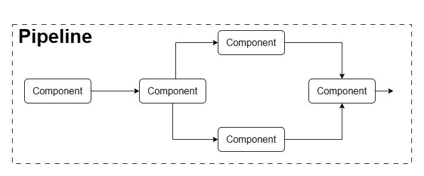
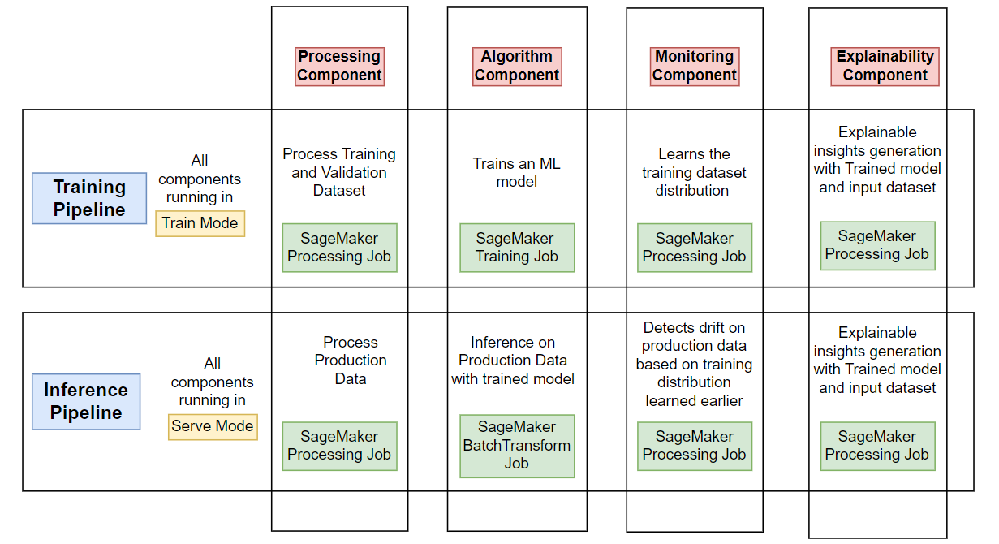

End-to-End MLOps on AWS: Part1 - Introduction #
| Authors: Palash Nimodia , Yogendra Yatnalkar |
| Last Edited: 01/05/2023 |
The upcoming series of blogs will try to explain how to build a complete MLOps system on AWS, mainly revolving around the AWS SageMaker ecosystem. The Part-1 of this blog introduces the concept of MLOps, its various constituents and the AWS services that are needed to build them.
Prerequisite: The blog series expects the reader to have a basic understanding of the following concepts:
- Docker
- Basic AWS Ecosystem (S3, ECR, AWS Systems Manager Parameter Store, etc)
- Advance knowledge of AWS SageMaker (and experience with Bring Your Own Container - BYOC for SageMaker jobs and SageMaker Pipelines)
- Basics of machine learning and deep learning techniques
Why MLOps ? #
According to the several sources available on the internet, around 85-90% of the Machine Learning models never make it into production. Some of the reasons for this low success rate are:
- Difficulty in scaling the tools and services around the AI ecosystem; and proving positive return on investment
- Difficulty in detecting drift and deciding what will be the best strategy to retrain the hosted models
- Complexity of governance and deployment of numerous AI models
- Lack of leadership support and understanding of machine learning models
Most of the above listed concerns can be resolved using right MLOps practices, hence MLOps has been gaining prominence in recent years.
MLOps Definition: #
MLOps refers to a standard set of practices for businesses that want to deploy and manage ML models in production.
Any MLOps system includes a number of tools for different purposes, e.g.
- Code Version Control: Git (GitHub, GitLab, Bitbucket, etc)
- Data Version Control: DVC, Git LFS, etc
- Testing and building services: Jenkins, AWS CodePipeline, etc
- Infrastructure as a code: Terraform, AWS CloudFormation
- Machine Learning Platform: AWS SageMaker, GCP VertexAI
- Workflow Orchestration: SageMaker Pipelines, Apache Airflow, AWS Step Functions, Kubeflow
In this series of blogs, we will use SageMaker as our main toolbox. We will demonstrate how to manage the entire lifecycle of an ML model with automation for use cases in multiple domains.
NOTE: For this blog, we will only assume that we are working with batch-workload i.e the use-case will carry out batch-inference and no real-time inference. In future blogs, we will also touch upon the topic of real-time workloads.
Definitions: #
The two essential constituents for any MLOps System are components and pipelines.
Components: #
A Component can be defined as an independent ML functionality or an ML operation which is a part of the larger process. Few of the examples of components could be: data-processing, ML model training, model inference, etc.
Pipeline #
A pipeline is a workflow which constitutes one or more components that execute a holistic task. Examples of pipelines include: training pipeline, inference pipeline, etc.
|  |
|---|
| Pipeline and component representation |
With our assumption of batch-workload, let’s define 2 pipelines, namely:
Training Pipeline: #
- The training pipeline will have a sequence of steps where the first step will process the training and validation datasets.
- The next step will carry out model training and tuning on the processed training and validation sets.
- In the monitoring step, we will learn the distribution of the training, which will be used to detect data drift.
- The last step will be the explainability step, where we will generate explainable insights from our ML model on the training and validation sets.
Inference Pipeline: #
- The inference pipeline will be running in the batch-inference setting where the first step will consist of processing of production data as required by the ML model.
- On completion of the processing step, the processed data will be passed to the trained ML model for Scoring.
- The next step will include drift detection on the production data, using the data distribution artifacts from the training pipeline. If drift is detected, then retraining the ML model on a new set of data is one way to resolve it.
- Lastly, the explainability step will be executed to generate explainable insights from our ML model on the production data.

To execute the above pipeline steps, we will have to develop the respective components.
We believe that most of the MLOps workloads consisting of multiple pipelines can be covered with 4 components which are:
- Processing Component
- Algorithm Component
- Monitoring Component
- Explainability Component
We recommend that every component has 2 modes, which are the Train mode and the Serve mode. This is to ensure that for every operation the training data undergoes, there is a corresponding operation during inference.
As the name suggests, when a component is executed in the training pipeline, it will be running in the “Train” mode. Similarly, when a component is getting executed in the inference pipeline, it will be set to run in the “Serve” mode.
Why SageMaker? #
Amazon SageMaker is a fully managed machine learning service. With SageMaker, data scientists and developers can quickly and easily build and train machine learning models, and then directly deploy them into a production-ready hosted environment.
Over time SageMaker has incorporated features that have made it an end to end platform for MLOps and reduced the need to integrate with other tools and services. Example:
| Earlier | Now |
|---|---|
| AWS Batch | SageMaker BatchTransform |
| Kinesis Firehose | Endpoint data capture |
| AWS Lambda for ML hosting | SageMaker serverless endpoint |
| AWS StepFunction of Managed MWAA | SageMaker pipelines |
| Amazon SQS | SageMaker Asynchronous endpoints |
| Amazon EMR | Pyspark Kernel in Studio Notebook |
Our AWS Stack ? #
As we said earlier, our MLOps system is built on top of AWS Cloud. The AWS services required are:
- AWS S3: Stores large volumes of data
- AWS SageMaker:
- The processing component, monitoring component and explainability component for batch-workloads discussed above are developed using SageMaker Processing Job.
- The training component is developed using SageMaker Training Job.
- The batch-inference component is developed using SageMaker BatchTransform Job.
- The Training and Batch-Inference pipelines are built using SageMaker Pipelines
- AWS Systems Manager Parameter Store: Used as a key-value store and for version tracking
- Other misc. Services: AWS CloudWatch, AWS Lambda, AWS EventBridge
How to create SageMaker Workloads ? #
- We have seen how our components are developed on AWS using different types of SageMaker workloads, such as processing jobs, training jobs, batch transform jobs, and so on. To create these workloads, we have two main options:
- Use the pre-built containers that AWS provides and maintains. We only need to write our own code scripts that define the custom logic we want to run. This is called the “script” mode of execution.
- Build our own custom containers that include the compute logic we want to run. Push these containers to AWS ECR and give the ECR URI as the input to the SageMaker workload. This is called the “bring your own container (BYOC)” mode of execution.
To handle complex dependencies and having full control over the modules, we recommend building custom containers and using the “BYOC” mode for SageMaker workload execution.- For detailed information, please refer to the AWS Documentation:
- For an end-to-end example of SageMaker workloads with custom containers, please refer to the following example: LINK
The END #
We hope that you found this blog informative and useful. To summarize, we started our blog with the definition of MLOps and then discussed its core constituents which are components and pipelines. Later, we saw in detail what is the role of each component and how they can be developed. We ended our blog with discussion around BYOC, its importance and example links.
Please provide us your valuable feedback and stay tuned. The upcoming blogs will be released soon.